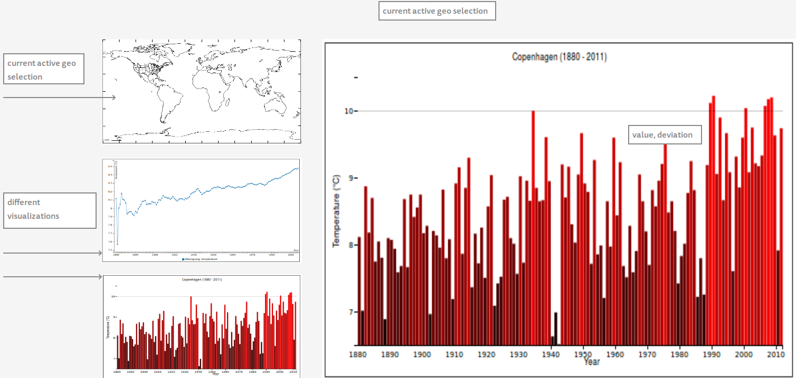

The following chart shows the average yearly temperature measured in Copenhagen from 1880 to 2011.
We see that the early 1940s was some of coldest years, while the 1990s and 2000s had some of the warmest years in the Danish capital (after 1880).
To get a better overview of how the temperature has progressed over the years, the following chart shows how the average yearly temperature from the 1880 for each year:
*This chart is build with c3, which is a d3-based library for reusable charts.
So the average temperature in Copenhagen from 1880 to 2011 was 8.48 °C. While average was more or less steady in the period from 1950 to 1970, and only increased a little from 1970 to 1980, we see that the average increased a lot in 1990s and even more in the 2000s (decade). Since the decade from 2000 to 2010 seems to have such a huge impact on the average temperature (for more than 100 years) the period most have been extraordinary warm, so let us take a closer look at this period.
The following chart shows the average yearly temperature from 2000 to 2010.
Comparing this charts, with we fact that the average yearly temperature from 1880 to 2011 was 8.48 °C, we see that every single year of the decade was much warmer (> 0.5 °C) than the average. There has been 6 years in the period from 1880 to 2011 where the yearly average temperature in Copenhagen was greater than 10°C, and out of these 6, 4 of them (2000, 2006, 2007 and 2008) was in the period 2000-2010. So by comparing this decade with the approximately 100 years which preceded, we conclude that the decade from 2000 to 2010 was unusually warm in Copenhagen.
How big data sets are reasonable to load in d3 visualizations? What types of visualizations does a limit like that exclude? Give examples of visualizations that must be based on large data sets and discuss how they deal with this. Could you have reduced the size of the data sets in this assignment.
Well since the d3 visualizations are created client-side, we are limited to how much data the server can deliver to client in reasonable time. This is limited by bandwidth both at the server side and the client side. The average Internet connection speed in Denmark is approximately 11 Mbit/s (source), so if we assume that the data delivered is limited by the client (and the client is Danish), the client will be able to receive 1 to 1.5 MBytes per second. Opening (and fully render) a website should probably not take more than a couple of seconds, which will limit the dataset to 3-4 MBytes, when we only care about bandwidth limitations. This limit only holds if the client need all the data to render the visualization, you could imagine some visualization where more data was loaded dynamic, e.g. when zoom in on a map.
Another limitation is the computing power on the client side, since all d3 computations and rendering will be done by the client. Some visualizations might take really long time to compute/render, but if this is done server side, the server might only compute the visualization once and just send the result to multiple clients.
Google Maps is an example of an interactive visualization which uses a very large data set. To limit the amount of data the server has to send to the client, Google Maps only sends detailed map information for an area, when the client zoom in at the area. The larger area the client views, the fewer details will be available. E.g. if you zoom onto Europa you see country borders, country names etc. but no streets or rail roads. If you continue to zoom onto an single country you may see main roads in this country, and if you zoom onto an single city you may see every single road in this city. If Google had to send every details of Google Maps to client, before the client could render anything, the client would probably never finish receiving and/or render the data.
On this page we send the average temperature for each month to client, and let the client compute the yearly average temperature. To minimize the amount of data we have to send, we could compute the yearly average on the server once, and just send this data instead. This would save approximately 11/12 of the temperature data we have to send. Also we send some additional data besides the year and temperature data, that we never use, which we could have removed.
So far we've only taught static visualizations. Which dynamic elements or interactions would improve your article? a mock-up is welcome.
While still providing static datasets (not database lookups), the visualization could be comprehensively extended by adding a map of the different locations containing data, thus adding a feature to change location, by clicking on the location. the next dataset would then be loaded into the visualization. An overall average from all locations could then be calculated and added to the dataset.
Locality: The site could try to determine from where the user is entering the site, and then pick the data matching the nearest location available.
Zoom: when clicking a year measurement, one could zoom into that year, displaying a graph of the months and season averages, compared to the year average, and the total average.
Hovering: when hovering over a measurement, the value could be displayed, together with the deviation from the mean.
Single visualization, as per the mock-up. The different types of visualizations could exist in small scale on the side, and when clicked, be displayed in the 'main' frame
the visualization of the 2 first graphs could build up one element at a time with say 10 ms delay, upon load. In this way the entire thing would build itself in around a second, in a dynamic way. In this way every time a visualization is clicked into the main frame, the changes would come 'rolling'.
It is a little difficult to get the dynamic things into the mockup without to much effort :-)
